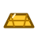
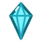
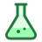

Worlds
No worlds yet. Create one below.
That file isn't a PangPlanet world export.
New world

0
0 0
0warp
- Near
- Alt
- Speed
- Throttle
- Light
- Engine
Slow to under 30 m/s to enter the market
Autopilot landing you on
Click the drill to start drilling.
Your rocket
Land on a planet or moon to drill for fuel. Deploy solar panels near the Sun to charge batteries; firing the engine stows them. Satellites and battery banks park in open space, clear of any gravity; mining rigs go on the ground. Antennas go on any planet or moon and reach 60 km (the dashed circle); drones park on the ground inside that range. Each one you buy costs more than the last.
Market
0Upgrades
Market
Friends charge 2× Solar prices for fuel and batteries and pay 80% for goods; wary species charge 3× and pay 60%. Upgrades, outposts and the warp drive are only sold at the Solar market.
Cargo for sale
They only share what they know with friends.
Selling them what they want improves relations. Friends pay 1.5× the market price. Mining crystals or stardust in their home system angers them.
Toll
Alien dictionary
Every species speaks the Galactic Common Tongue. Each shape's corners give its value, from circle (0) to pentagon (5); a dot marks a digit of a base-6 number, and ⊥ separates words. Hear a word from different speakers (homeworlds, freighters or toll demands) to work it out, or study it for science.
No words heard yet. Visit an alien homeworld or freighter.
Big purchase
Warp drive
Jump to a nearby star. Each jump drains battery charge by distance, and you arrive at a safe distance from the star, ready to recharge.
Satellite
Parked here, it charges its 3 batteries in sunlight, even while you're away.
That's too little light to charge much. Pick it up and park it closer to a star.
Mining rig
Mines 1 gold a minute on while powered, even while you're away. Each battery of charge runs it for 30 minutes; it holds 6.
Battery bank
Stores up to 10 batteries of charge. Drones can drop charge here or pick it up.
Ship
A ship is built from blocks snapped together side by side, as many as you can afford. Engines push; every block adds mass, so a heavier ship speeds up more slowly. Each engine burns 1 fuel a second at full throttle, and each tank holds 100. Solar panel blocks charge the ship's batteries, even while it's parked. Your rocket flies inside and takes the controls; when you leave, the ship stays where it is.
Park the ship beside the market to add or remove blocks. Removed blocks refund half their price.
Ship builder
0Observatory
Watches every star on your galaxy map within telescope range, even while you're away. The longer it looks, the more it learns: planets one at a time as they cross their star, big ones close in first, then crystal worlds among the planets found, then possible biosignatures. You only know you've found every planet once you visit. Nearer stars come into focus faster, and telescope upgrades widen its range. Near a star it runs on starlight; anywhere darker it burns 1 battery of charge every 2 hours.
Haulers
A hauler flies its route of stops on repeat with no antennas, even while you're away. It pays galactokens for fuel inside a star system and burns the charge it carries to warp between stars. It carries 6 batteries and sells gold at the market, but never batteries.
A builder does everything a hauler does and also builds. At a build stop it parks a satellite, battery bank or observatory from your hold near any star on your galaxy map, then drops the stop. It can't build haulers, builders or drones.
Drone
Record a route by flying it yourself from here and landing back beside the drone. The drone repeats it forever, docking and using the satellite, battery bank or mining rig wherever you did. Its route shows as orange dashes, in flight and on the galaxy map.
Every run pays for its fuel, even one that moves only a little charge. A wait between runs saves galactokens.
Galaxy map
Filled dots: visited. Rings: seen through a telescope; tap one to see how much your observatories have learned. Teal circles: your observatories' range. Purple circle: warp range. Dashed: telescope range. You can only warp to stars on this map. Drag to move the map; scroll or pinch to zoom. Tap a star to see a photo of it from where you are, then Close up (visited stars) to see its planets. Moon counts show once you or a solar sail have been close. Dashed gold: bounty waiting. Cyan: crystals. Violet: stardust, found by visiting or from friendly aliens. Dashed green: possible biosignature: an alien homeworld, simple life, or sometimes nothing. Solid green: simple life found. Solid colour: alien homeworld. Dashed purple ring: a wormhole in that system; purple dotted lines join the ends of wormholes you've been through. Orange dashes: your drone's route. Cyan diamonds: your parked ships. Lime pods: Ancient Seeders drifting between the stars; land on one gently to open it. Faded once opened. Gold ★: a star you bookmarked; tap Bookmarked only to hide every other star. Soft clouds: nebulae; pink ones glow with hydrogen, blue ones are dust reflecting starlight, and dark ones are dust hiding the stars behind.
Settings
Settings apply to every world in this browser. Touch controls only show on touchscreens.
Goals
Goals are a suggested path for new players, not rewards. Do them in any order. Turn them off in ⚙ Settings.
Cheats
Toggle with `. Only worlds created with cheats have them.
PangPlanet
Goal
Fly from Earth to the Moon, take the wormhole to the Sun, and dock at the market. The green goal bar at the top suggests what to try next; tap it for the full list.
Earn
- The first landing on each planet or moon pays a bounty, shown in gold by its name.
- Buy solar panels and empty batteries at the market, charge them near the Sun, then sell them back.
- A satellite parked by a star charges batteries while you travel.
- A mining rig digs gold on any planet while it has battery power.
Explore
- The Moon pulls about a sixth as hard as Earth, so it's the easiest place to practise landing.
- Gas giants pump double fuel.
- Telescopes find stars; observatories learn about them. Scanning with the rocket's telescope (T) puts stars on your map, but only their names. Park an observatory in open space and it studies every star in range over time: planet counts after a couple of minutes, crystal worlds after about 15, possible biosignatures after about 45, slower for distant stars.
- Crystals: some rocky worlds around other stars have them, and the fuel drill brings them up. An observatory shows which systems.
- Stardust: much rarer and invisible to telescopes. Visit a system or ask friendly aliens to find it. It pays for the top upgrades.
- Each crystal or stardust world holds a limited amount: 10 to 25 crystals or 3 to 8 stardust, up to twice that near the galactic core. Once it's mined out, the drill brings up fuel only.
- Simple life: a few temperate worlds with water and air hold plants and microbes, but no one to talk to. Drill a sample on one for 150 science.
- Aliens live on some worlds around other stars. Observatories spot possible biosignatures; most turn out to be homeworlds or simple life, and no living world goes unflagged. Land on one to meet them. Friendly aliens tell you where stardust is, for science. Homeworlds of friendly or wary species run a small market: fuel, empty batteries, and buying your goods, at worse prices than the Solar market. Each species wants gold, crystals or charged batteries; selling to them wins them over. Mining crystals or stardust in their home system angers them. Hostile aliens charge a toll to enter their system, ban new outposts there, and raid haulers that stop there.
- Alien freighters sometimes pass through the system you're in, including the Solar System. Fly within 150 m of one and match its speed to under 30 m/s to meet it: trade, ask for tips, or raid it for its cargo. Friendly and wary freighters sell a few charged batteries, at 2× or 3× what the Solar market pays for one, so a crash far from home needn't strand you. Raiding angers that species and pleases its rival.
- Black holes sit between some orbits, one between Jupiter and Saturn. Coast past one to swing onto a new heading; too close and you fall in.
- Wormholes: some star systems beyond the Sun's neighbourhood have one, orbiting past the outermost planet. Each links to another system 10 to 30 sectors away. You find out where by going through; the galaxy map remembers the link.
- A wormhole beside Saturn leads far outside the galaxy. Out there, Leviathan's pull drags you back to its worlds if you stray, so the wormhole is the way home.
- Two dwarf galaxies orbit ours; zoom the galaxy map all the way out to see them. The Large Magellanic Cloud is full of young blue stars and stardust, around the glowing Tarantula Nebula. The Sagittarius Dwarf, being pulled apart by our galaxy, holds old stars and the black hole M54. Crossing the dark takes an FTL ship with plenty of hydrogen; in between, you drift toward the nearest galaxy. Build a wormhole pair on your first visit to make the trip home quick.
- Ships: buy a hull at the market and build onto it while it's parked beside the market. Attach blocks to any open side: engines, fuel tanks, batteries, solar panels, and hull plates and wedges in your choice of paint, which only add looks. More engines push harder, and every block adds mass. Fly your rocket up to it to board and take the controls; your rocket's own fuel waits for you. Leave from the rocket menu and the ship stays where you left it. A ship that crashes breaks up, but your rocket gets out. An armour block takes the hit instead: it breaks into a plain hull plate and the ship lands safely. One block per crash; stars and black holes are fatal regardless. Ships have no warp drive.
- FTL drive: a ship block (one per ship) that goes faster than light. Press J in open space: the ship cruises straight along its heading, ignoring gravity, at up to 10c (tier 0), 100c, 1,000c or 10,000c (tier 3); throttle sets the speed. It burns 1 battery of the ship's charge per sector and drops out, stopped, at the edge of any gravity well or when the charge runs out, and time warp drops back to 1×. Upgrade tiers at the shipyard.
- Fusion: a magnetic scoop lifts hydrogen off a star from outside its gravity well (within about 3 star radii; closer is faster, and the well itself is fatal). Hydrogen tanks hold 100 each. A fusion reactor first tops up the engine fuel tanks, turning 1 hydrogen into 1 fuel at up to 0.5 a second, then turns 1 hydrogen into 1 battery of ship charge at up to 2.5 a second, even during FTL. A ship full of hydrogen can cross the dark between galaxies, and a scoop near any star can refill its tanks far from a market.
- Your own wormholes: buy a pair at the market, place the first mouth in open space, then carry the second one anywhere and place it. Each trip costs 5 galactokens per sector between the mouths; haulers use them too. A wormhole nobody goes through for 6 hours of play collapses.
- A supermassive black hole sits at the galaxy's center, 100 sectors from the Sun. Stars near it hold more crystals and stardust. Something orbiting it is worth the trip.
Science
- Earn it the first time you visit a star system, land on a world, drill a sample or enter a black hole's pull. Sell it at the market.
- Solar sails fly straight out from the star lighting them for 36 hours. They chart stars near their path and send back science from any they pass close to. Launch one from the rocket menu; move around a star to aim. The closer to the star you launch, the faster and farther it goes.
Automate
- Landing pads go on any planet or moon. Touch down on one at up to 40, or 25 over your hull's limit if that's higher. Drones and ships get the same. The telemetry says "pad below" when you're over one.
- Antennas on planets and moons cover 60 km. A drone in range repeats a route you record by flying it yourself, carrying charge between satellites, battery banks and mining rigs.
- Haulers fly a route of your outposts between stars, no antennas needed (Rocket, then Haulers). Builders park satellites and battery banks at any star on your map.
Danger
- Top speed is 300 m/s. In this galaxy that's the speed of light, c, which is why FTL speeds read as multiples of c. Crossing between stars at that speed takes a long time even with time warp, so the warp drive is the practical way to travel between systems.
- Touch down slower than 30 m/s or the rocket explodes. Crashing destroys every battery on board. Landing leg upgrades at the market raise that limit to 45, 60, then 90 m/s; docking still needs under 30 m/s.
- The landing autopilot (market, 1,500) takes over when you're heading into a planet or moon too fast, turns you around and brakes you down. You can't crash while it's flying. Switch it on or off in the rocket menu.
- Docking at the market, a satellite, a battery bank or an alien freighter also needs a speed under 30 m/s, so brake before you arrive.
- Out of fuel in deep space: abandon ship, which counts as a crash. With the rescue module, a drone in antenna range refuels you instead.
Controls
- Engine
- Engine on / off
- ⟲ ⟳
- Hold to rotate
- − +
- Hold to change throttle
- Pinch
- Zoom
- Left slider
- Drag to change time warp. Locked to 1x near planets and stars; buy a higher limit at the market
- Tap rocket
- Rocket menu: mine fuel, solar panels, warp drive
- Prompts
- Tap to enter the market or respawn
- 🗺
- Galaxy map
- ⚙
- Settings: sound volume, background and milestone music volume, and a joystick layout: drag it to point the rocket, hold the burn button, set throttle on the right
- Space
- Engine on / off
- Shift Ctrl
- Throttle up / down
- Q E
- Rotate
- Scroll
- Zoom
- Shift + scroll
- Time warp (or , .)
- Click rocket
- Rocket menu, mine fuel
- F
- Enter the market when close
- G
- Stop drilling
- P
- Deploy / stow solar panels
- W
- Warp drive, once bought
- L
- Landing autopilot on / off, once bought
- M
- Galaxy map
- T
- Scan with telescope, once bought
- C
- Respawn after a crash
- X
- Abandon ship when out of fuel in deep space
- H
- Show this again
Touch down slower than 30 m/s or the rocket explodes. The blue line shows where you will coast with the engine off.
Progress saves automatically in this browser. The ☰ button goes back to your worlds, where Export downloads a world as a file to back it up or move it to another device.